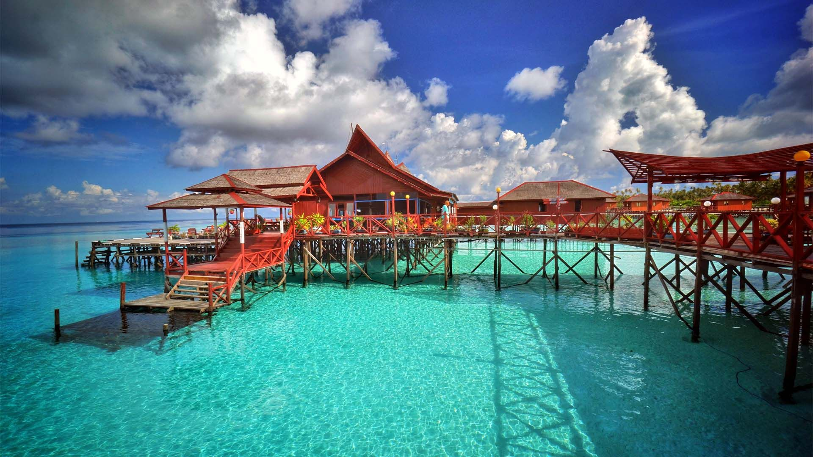
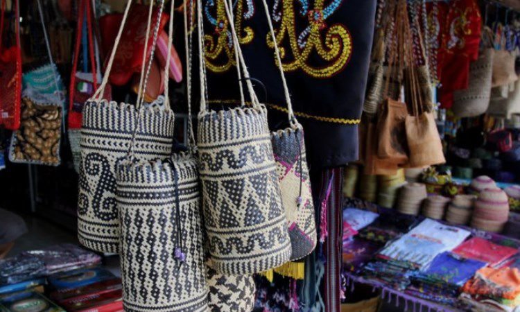

Kalimantan atau biasa disebut Borneo oleh masyarakat internasional. Kalimantan adalah pulau terbesar ketiga di dunia, terletak di utara Pulau Jawa dan barat Pulau Sulawesi. Pulau Borneo terbagi menjadi Indonesia, Malaysia, dan Brunei. Di Kalimantan
terdapat banyak suku, adat istiadat, keragaman budaya, dan budaya khas daerah Kalimantan. Tidak hanya itu, Kalimantan juga dikenal dengan pulau-pulau indah yang ada di dalamnya. Mari mengenal Kalimantan lebih dalam!
Wisata

Kalimantan telah menjadi destinasi wisata yang sangat populer beberapa tahun terkahir. Ada berbagai jenis liburan yang dapat dijumpai di kalimantan, mulai dari petualangan, traking hutan, pantai, safari orang utan, menyelam dan lain sebagainya. Banyak
pengunjung dari berbagai daerah mulai dari dalam negeri maupun luar negeri menghabiskan liburan di pulau Kalimantan, baik untuk menghabiskan bulan madu, libur tahun baru, paskah, imlek dan lain sebagainya.
Souvenir

Kamu dapat menemukan berbagai macam oleh oleh yang dapat dibawa setelah berkunjung ke pulau Kalimantan. Oleh oleh yang tersedia dari Kalimantan biasanya berbahan dasar alam seperti batu batuan ataupun tumbuhan yang diolah menjadi perhiasan oleh penduduk
asli kalimantan. Selain itu, oleh oleh kuliner dari Kalimantan juga sangat beragam karena terdiri dari banyak kalangan